|
| ||
|
| ||
Aaron Barth
Microsoft Corporation
Updated April 23, 1999
Contents
Introduction
Background
What To Do About These Exceptions and Access Violations
Where
to Get IIS Exception Monitor
Using
This Information To Solve Your Problems
When All Else Fails: Contacting Microsoft Technical Support
Conclusion
This article has been written to give you a look at a tool that Microsoft Technical Support has been using to solve complex problems with Microsoft® Internet Information Server (IIS). Learning how to use it effectively can help you to troubleshoot complex IIS problems under the following categories:
There are Microsoft Knowledge Base  articles on most of the topics above. However, each IIS installation is different. Companies use IIS as the building block on top of which they build their Web applications.
articles on most of the topics above. However, each IIS installation is different. Companies use IIS as the building block on top of which they build their Web applications.
Some Web applications can use Active Server Pages (ASP) technology to connect to ODBC-compliant databases, and some applications can contain compiled business objects running within IIS. COM objects called Active Server Components can be written in many languages, including Microsoft C++, Microsoft Visual Basic® (VB), Java, Delphi, Powerbuilder, and others. These Active Server Components can be written in-house or purchased externally.
System administrators and developers can use the IIS Exception Monitor to diagnose problems within IIS. Once they have determined the cause of the problem, they can contact the developer or vendor of the dynamic-link library (DLL) and provide them with concrete information about the situation.
Many problems with IIS could be caused by exceptions that occur within IIS's process space (Inetinfo.exe). The most common exception is the 0xC0000005 exception, which is called an access violation. Access violations occur if a DLL within the IIS process tries to access memory that is not allocated or to free memory that has already been freed.
This is all good to know, but how does it help with troubleshooting IIS?
Ever hear of the ASP 0115 error? Usually this error is raised to the browser and the IIS log because an access violation occurs. There is usually no one cause of these error messages because each site uses different components in its Web application.
Ever have the Web server stop without you stopping it? This can also be caused either by an access violation or another type of exception being thrown within IIS.
error 'ASP 0115'
Unexpected error
/<Web Name>/<ASP file name>.asp
A trappable error occurred in an external object. The script
cannot continue running.
If you get this error message, you have a leg up on this process. When the error is displayed on the returned ASP page, you now know two things:
If knowing the page that is causing the problem is enough for you to figure out the problem, then you don't need to go any further. However, if this is not the case for you, take a look at the second bit of information that this error gives us. This error tells you that an exception occurred in an external object.
Well, that is great information, right? All you need to do is to remove all calls to external objects on the page and see if it fails. This is usually not possible since removing all Server.CreateObject statements in an ASP page would leave your page with only the intrinsic objects, such as Application, Session, Request, and Response. ASP's power comes from being able to create an instance of any Active Server Component or COM object. If you remove all calls to external objects, this leaves you with a pretty boring page. ASP considers any object that it creates with a Server.CreateObject statement to be an external object.
Microsoft Technical Support has provided a tool that will pry the hood of this car we call IIS open so you can peek inside. This tool is called the IIS Exception Monitor. It attaches to the IIS Process and reports back what is going on. The IIS Exception Monitor can provide an explanation of which type of exception occurred, what thread the exception happened on, and what DLLs were executing functions on that thread.
This may not be enough information to solve the problem 100 percent of the time. However, it usually provides more information than you had before and narrows the scope of the problem down to focus on a certain ODBC driver or component that is being called.
Installing the IIS Exception Monitor should go smoothly provided you obtain the correct EXEs for the version of IIS and processor architecture of the IIS server. Use the link below to download the appropriate version.
Where to Get IIS Exception Monitor (version 6.1.0.0)
 IIS Exception
Analysis Tools (Intel)
IIS Exception
Analysis Tools (Intel)
 IIS
Exception Analysis Tools (Alpha)
IIS
Exception Analysis Tools (Alpha)
Installing IIS Exception Monitor
Once you have downloaded the Ixcptmon.exe file, you can start the installation program by running the EXE.
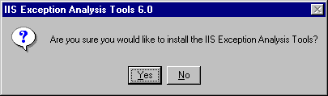
Figure 1. IIS Exception Analysis Tools 6.0 installation prompt
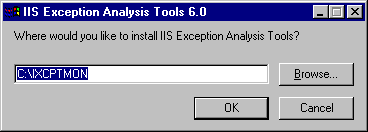
Figure 2. IIS Exception Analysis Tools 6.0 directory prompt
When the wizard first starts you will see the Welcome window.
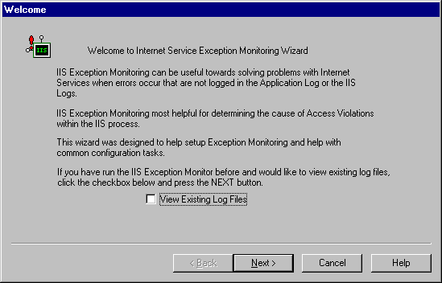
Figure 3. Welcome window
From this screen you have the option to click Next, Cancel, or Help. To continue running the IIS Exception Monitor and progress to the next page, press Next.
Note The View Existing Log Files check box can be selected if you want to jump to view log files that you have already created using the IIS Exception Monitor. If you select this check box, you must press Next to jump to the page where you can view the log files.
Using the Check Symbols page
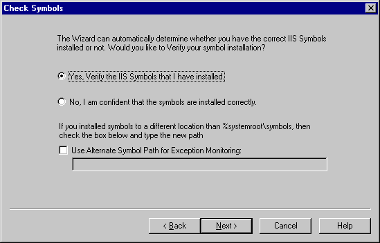
Figure 4. Check Symbols dialog box
Note There is an option to choose an alternate symbol path. If you check the Use Alternate Symbol Path for Exception Monitoring check box, type in the alternate symbol path in the space provided.
Using the Verify Symbols page
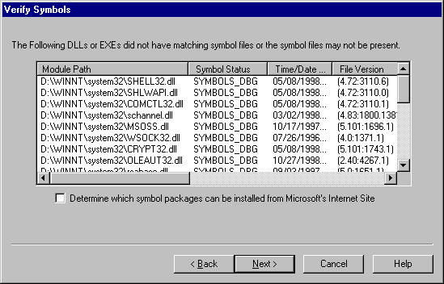
Figure 5. Verify Symbols window
Using the Download page
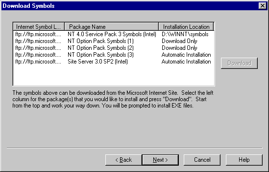
Figure 6. Download Symbols window
Note The symbol packages in this list can be downloaded from the Microsoft Internet site. You may have applied hotfixes that do not have corresponding symbol files, or the symbol files may not be available publicly for the DLLs in question. For a list of the DLLs with symbols that do not match please refer to the SymDiff.log file in the directory where the IIS Exception Monitor is installed.
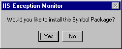
Figure 7. Symbol Package installation dialog box
Note The downloaded files will be placed in the \download directory underneath the directory where the IIS Exception Monitor is installed.
Using the Process Options page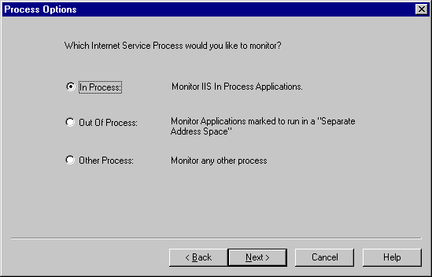
Figure 8. Process Options dialog box
Using the Select Out Of Process Application page
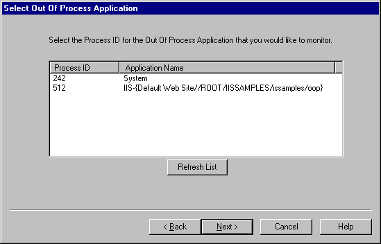
Figure 9. Select Out of Process Application dialog box
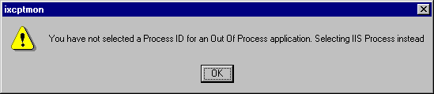
Figure 10. This message box appears if you do not select an Out of Process ID.
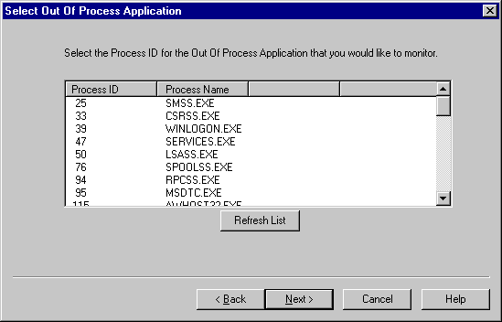
Figure 11. Select Any Process dialog box
Using the Session Options page
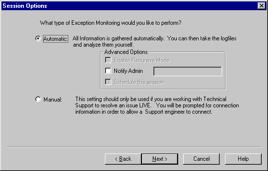
Figure 12. Session Options dialog box
Note This option should be used primarily if you are currently working on an issue with technical support. If Manual is selected, then once an exception occurs the Web server will be suspended and will not be able to accept any Web requests until it is either restarted or the monitoring session has been canceled.
Note This requires the Task Scheduler to be installed. If the Task Scheduler is not installed, this option will be disabled
Using the Manual Session Options page
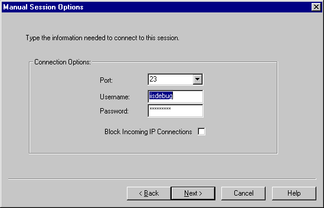
Figure 13. Manual Session Options dialog box
Note The username and password specified above do not need to match any username or password that exists in your Windows NT® user accounts database. This username and password will only be used for this monitoring session. It is strongly recommended that you specify a username and password for your session to prevent unauthorized access.
Using the Start Monitoring page
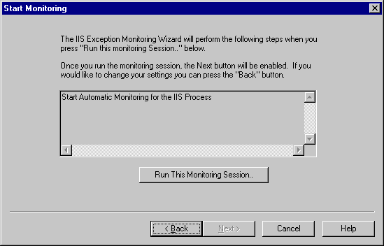
Figure 14. The Start Monitoring dialog box
Note If you have chosen the Schedule this Session option, a dialog will appear. For more information on this feature, see the Advanced Monitoring Options section in this article.
Using the Status page
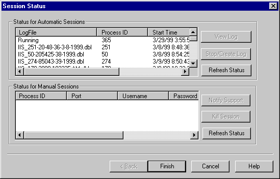
Figure 15. The Session Status dialog box
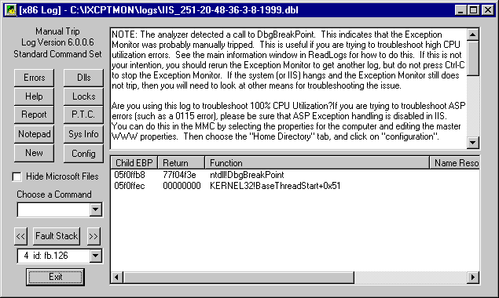
Figure 16. The Log Analyzer dialog box
Note The Exception? column is for future use.
The DBL file that is created in the \ixcptmon\logs directory is a file that was created when the server IIS Exception Monitor encountered an exception. This file contains the output from a list of commands that can be parsed later and displayed by the Readlogs.exe tool.
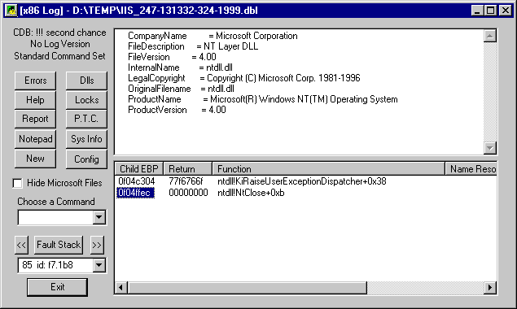
Figure 17. This log displays the output of the Readlog.exe tool.
Within the .dbl log file will be the output of a command kv. This is your stack of the thread that was executing when the IIS Exception Monitor encountered an exception. This stack contains the functions that were executing along with the parameters passed to the functions on the stack. This can be shown in the lower window of the Readlogs.exe tool.
If the DLL that faulted within IIS contains symbolic information, then this stack will tell you the name of the function that faulted. If the symbols were applied and match the installed DLLs, then this information on the stack is accurate. If a function within a DLL that does not have symbolic information were found on the stack, then you only see a memory address for the function in question.
The Readlogs.exe tool can utilize the starting and ending addresses of all DLLs loaded in the process at the time of the fault. The tool can also figure out which DLL's memory space the function on the stack lies within. That information will be shown in the Function Name column if the symbols are not present.
If you chose Schedule this Session from the Session Options page, then you will see the following dialog (Figure 18) box when you click on the Run this Monitoring Session button from the Start Monitoring page.
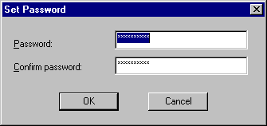
Figure 18. The Set Password dialog box
When the IIS Exception Monitor dialog box pops up, click on the Task tab and set the username (DOMAIN\username if applicable) and password for the account that you would like to run this scheduled session when no one is logged on.
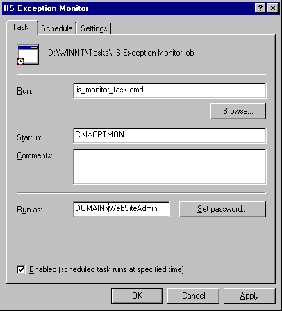
Figure 19. The IIS Exception Monitor dialog box Task page
From the Schedule tab you can change the time that the task is executed. By default Schedule Task is set to execute At System Startup. If you would like to have multiple schedules, you can choose the Show multiple schedules check box and add a new schedule.
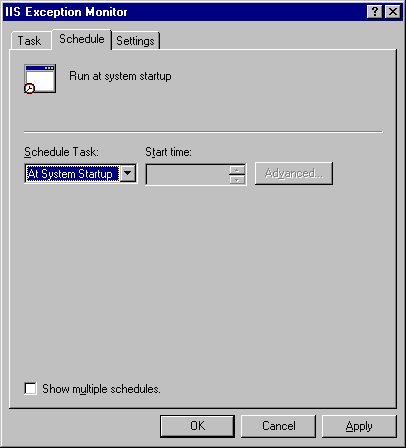
Figure 20. The IIS Exception Monitor dialog box Schedule page
From the Settings tab, make sure that you clear the Stop the scheduled task after xx hour(s) check box. This ensures that the task will not be stopped until it has completed.
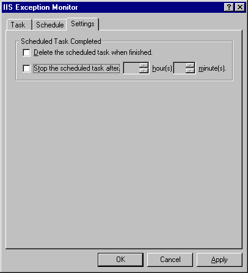
Figure 21. The IIS Exception Monitor dialog box Settings page
If you are able to examine a DBL file from your machine and are still no closer to solving your problem, you may need to contact Microsoft Technical Support to examine the problem further. The IIS Exception Monitor wizard is capable of setting up your system for remote diagnosis by an IIS engineer.
Remember the Session Options page (Figure 11)? This page allows you to choose whether you would like an automatic session or a manual session. In the previous example we chose an automatic session so we could get the log and examine it ourselves. If you would like to set up for remote diagnosis, you can choose Manual session. You will then be prompted for additional information.
In order for Microsoft Technical Support to diagnose your machine, it must be connected to the Internet or have the ability, through a dial-up connection, to reach the Internet. You must choose an unused port number over which the connection will take place. For security, you should provide a unique username and password for this session. This username and password may be required to connect to this session remotely. All of these options are configurable on the Manual Session Options page.
On the Manual Session Options page there is the option to choose any port number and specify a username and password for the connection. There is also a check box for disabling incoming IP connections. If you check this box, the IIS Exception Monitor session will not accept any socket's connection until someone presses @L in the console window to enable IP sessions.
Note When this is enabled, the response from this command will be LOCK: No IP Sessions Allowed.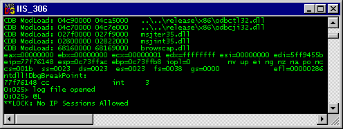
Figure 22. "LOCK: No IP Sessions Allowed": response to disabling incoming IP sessions
Once you have a support incident open with Microsoft Technical Support, you can notify a Microsoft engineer by checking the Notify Support check box. You can then fill in the service request number, the e-mail address of the engineer that you are working with, and the IP address or DNS name of an SMTP server accessible from the IIS server.
The IIS Exception Monitor has been used successfully by Microsoft Technical Support to solve many issues with IIS. This tool does not have all of the answers. However, it can provide more information on the status of a failure than the Web server's logging mechanisms can.
Keep in mind that this tool is primarily used when the server is crashing and the IIS logs and the event logs do not contain enough information to solve the problem.
Aaron Barth is a Technical Lead for the Internet Server Support Team at Microsoft.
Did you find this material useful? Gripes? Compliments? Suggestions for other articles? Write us!
© 1999 Microsoft Corporation. All rights reserved. Terms of use.